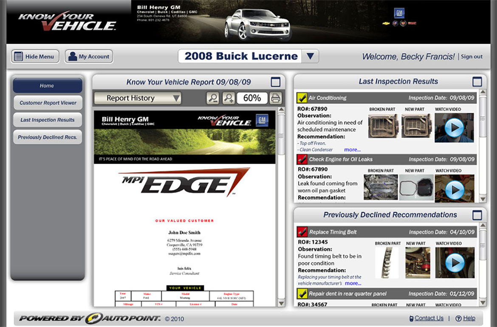
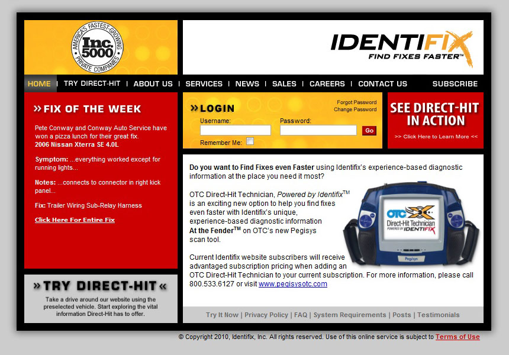

<section id="work" class="work">
	<div class="container">
		<div class="row">
			<div class="col-lg-12 text-center">
				<h1><span>Work Portfolio</span></h1>
			</div>
		</div>
		<div class="row work-row">
			<div class="col-md-8 col-md-push-4">
				<div class="browser-wrapper">
					<div class="browser-top">
						<ul>
							<li></li>
							<li></li>
							<li></li>
						</ul>
						<span class="url"><a href="http://www.identifix.com/">identifix.com</a></span>
					</div>
					<div class="cycle-slideshow" data-cycle-speed="300" data-cycle-swipe="true" data-cycle-fx="scrollHorz" data-cycle-pause-on-hover="true">
						<div class="cycle-prev">&lsaquo;</div>
    					<div class="cycle-next">&rsaquo;</div>
						
						
					</div>
				</div>
			</div>
			<div class="col-md-4 col-md-pull-8">
				<h2>Service Repair Solutions</h2>
				<h3>UI Engineer &amp; Web Designer</h3>
				<h3>Spring 2010</h3>
				<p>I worked at Service Repair Solutions Inc as a contractor in the first half of 2010. I was tasked with updating and maintaining the style guide for <a href="http://www.identifix.com/">identifix.com</a>. Also, in my role as a UI/UX Designer I created wireframes, mockups, and storyboards for a proposed website project.</p>
				<h4>Skills:</h4>
				<ul class="skills">
					<li>HTML</li>
					<li>CSS</li>
					<li>JavaScript</li>
					<li>Silverlight</li>
					<li>Adobe Illustrator</li>
					<li>UI/UX Design</li>
				</ul>
			</div>
		</div>
	</div>
</section>
